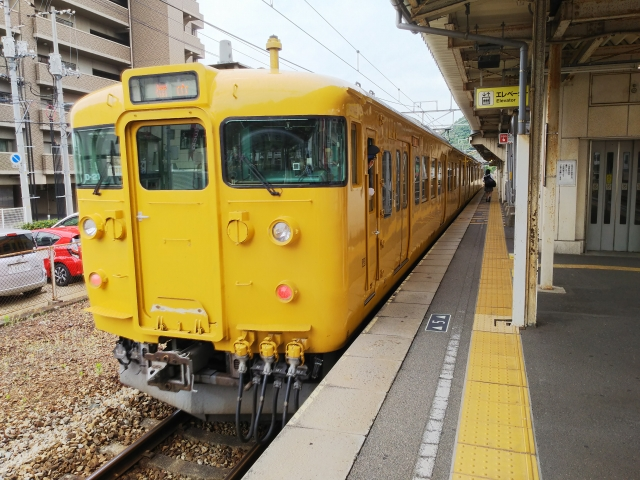

岡山で高松行きに乗ったつもりが、なんか違う・・・
あわてて降りました。
笠岡やがな。
せっかく笠岡まで来たんで、保存車両の確認を。
井笠鉄道の車輛です。状態はなかなかいいですね。
反対からも。
やっぱり雨にあたらんというのは、車両の保存には
大事なんかな。

昔、丸亀から島伝いに笠岡まで来たことがあるので
今回は逆に笠岡から四国へ行こうかな。
駅からすぐのところに船の乗り場を発見。
泊まっとる泊まっとる。
br>
しかーし！もう今は四国まで行く船はないみたいで
す。
せっかくなので、この船に乗って行ける、大飛島へ
行くことに。
大飛島には２カ所泊まるというので、降りる港と乗
る港を分けよと思って、最初の港で降りようとした
ら・・・。そのままスルー？
たまにある、乗る人おらん＆降りる意思表示なしの
場合は止まらずに去るパターンでした。
島のメインの港に到着。
船は引き続き小飛島、六島へと向かいます。
船の待合所は、えらく綺麗です。笠岡の港もそうや
ったけど。
港近辺には学校以外、民家は全然ありません。
昔は向かいの小飛島の近くまで砂州があって、干潮
の時にはきれいに見えたようです。
なのでこの港は「洲」という珍しい名前です。
港には草取り用にヤギが繋がれてました。
笠岡に帰る船がやってきました。
ちなみに船名は「しおじ」でした。
笠岡駅に戻って、昔の井笠鉄道のホームのあたりに
行ってみました。
走ってる頃に行ってみたかった～
さて、ここまで来たので、足を延ばして尾道へ。
昔の駅舎のほうが良かったなぁ（この感想しかな
いんやけど）
駅前には向島行の渡船乗り場があります。
２０分おきにやってくる船がちょうどやってきまし
た。
もちろん乗りこみます。
向島への渡船は複数あって、車も乗りこめるフェリ
ーもあります。
ちなみに乗った渡船は人と二輪のみです。
川もどんどんさかのぼって行きます。
向島の乗り場が見えてきました。
しかしこの季節はええけど、冬は寒いやろなぁ
しかし二輪の安いこと！
こんな安く原付が乗れる船も珍しいと思います。
降りた船はすぐ尾道に引き返して行きました。
向島の乗り場です。
知らん人が見ても、この先に船の乗り場があるとは思えん雰囲気ですね。
少し島の中心まで歩いて、因島行のバスに乗りこみ
ます。
バスは高速道路に入って、因島大橋を渡ったところにあるバス停で下車
します。
ここから、ある場所まで歩いて行きます。
海沿いの目的地に到着。
な、ない～！！
目的の店は、無くなってましたっ！！
そう、この昭和５８年公開の第３２作「男はつらい
よ 口笛を吹く寅次郎」の印象的なラストシーンの
舞台になった「一福屋食堂」が残ってると思ってた
のですが、残念ながら無くなってました。
食ベログにも出てくるので、無くなったのはそんな
に昔ではないと思うのですが・・・
分かりにくいですが、上の画像に写ってる赤い橋は
そのままでした。
４０年前はここから因島までのフェリーが出てたよ
うです。
さて、無事高松までたどり着いた翌日。
高松築港駅からユーザに向かいます。
昔は後ろに写ってる建物がユーザで、駅近で非常に
便利だったんですが、移転してしまってかなり不便
になりました。
ひと仕事終えて、潟元駅に戻ってきました。
これから志度まで向かいます。
志度でＪＲに乗換えて、鶴羽駅にやってきました。
生憎雨が降ってきましたが、海沿いに歩いて行きま
す。
面白そうな建物が見えてきました。
昭和なドライブインで有名な大川オアシスです。
実際は、それほど昭和的でもなかったっす。
県民割のおかげで、１０００円のクーポンをもらっ
たので、ここで使います。
自腹なら絶対頼まんような豪華な注文！
晴れてたら、小豆島が綺麗に見えるはずですが、残念です。
もちろん、食べ過ぎで腹パンパンになりましたけど・・・